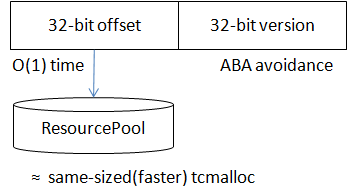

内存管理总是程序中的重要一环，在多线程时代，一个好的内存分配大都在如下两点间权衡：
- 线程间竞争少。内存分配的粒度大都比较小，对性能敏感，如果不同的线程在大多数分配时会竞争同一份资源或同一把锁，性能将会非常糟糕，原因无外乎和 cache 一致性有关，已被大量的 malloc 方案证明。
- 浪费的空间少。如果每个线程各申请各的，速度也许不错，但万一一个线程总是申请，另一个线程总是释放，内存就爆炸了。线程之间总是要共享内存的，如何共享就是方案的关键了。
一般的应用可以使用 tcmalloc、jemalloc 等成熟的内存分配方案，但这对于较为底层，关注性能长尾的应用是不够的。多线程框架广泛地通过传递对象的 ownership 来让问题异步化，如何让分配这些小对象的开销变的更小是值得研究的问题。其中的一个特点较为显著：
- 大多数结构是等长的。
这个属性可以大幅简化内存分配的过程，获得比通用 malloc 更稳定、快速的性能。brpc 中的 ResourcePool<T> 和 ObjectPool<T> 即提供这类分配。
注意：这篇文章不鼓励用户使用
ResourcePool<T>或ObjectPool<T>，事实上我们反对用户在程序中使用这两个类。因为”等长”的副作用是某个类型独占了一部分内存，这些内存无法再被其他类型使用，如果不加控制的滥用，反而会在程序中产生大量彼此隔离的内存分配体系，既浪费内存也不见得会有更好的性能。
ResourcePool
创建一个类型为 T 的对象并返回一个偏移量，这个偏移量可以在 O(1) 时间内转换为对象指针。这个偏移量相当于指针，但它的值在一般情况下小于 2^32，所以我们可以把它作为 64 位 id 的一部分。对象可以被归还，但归还后对象并没有删除，也没有被析构，而是仅仅进入 freelist。下次申请时可能会取到这种使用过的对象，需要重置后才能使用。当对象被归还后，通过对应的偏移量仍可以访问到对象，即 ResourcePool 只负责内存分配，并不解决 ABA 问题。但对于越界的偏移量，ResourcePool 会返回空。
由于对象等长，ResourcePool 通过批量分配和归还内存以避免全局竞争，并降低单次的开销。每个线程的分配流程如下：
- 查看 thread-local free block。如果还有 free 的对象，返回。没有的话步骤 2。
- 尝试从全局取一个 free block，若取到的话回到步骤 1，否则步骤 3。
- 从全局取一个 block，返回其中第一个对象。
原理是比较简单的。工程实现上数据结构、原子变量、memory fence 等问题会复杂一些。下面以 bthread_t 的生成过程说明 ResourcePool 是如何被应用的。
ObjectPool
这是 ResourcePool 的变种，不返回偏移量，而直接返回对象指针。内部结构和 ResourcePool 类似，一些代码更加简单。对于用户来说，这就是一个多线程下的对象池，brpc 里也是这么用的。比如 Socket::Write 中把每个待写出的请求包装为 WriteRequest，这个对象就是用 ObjectPool<WriteRequest> 分配的。
bthread_t 的生成
用户期望通过创建 bthread 获得更高的并发度，所以创建 bthread 必须很快。在目前的实现中创建一个 bthread 的平均耗时小于 200ns。如果每次都要从头创建，是不可能这么快的。创建过程更像是从一个 bthread 池子中取一个实例，我们又同时需要一个 id 来指代一个 bthread，所以这儿正是 ResourcePool 的用武之地。bthread 在代码中被称作 Task，其结构被称为 TaskMeta，定义在 task_meta.h 中，所有的 TaskMeta 由 ResourcePool<TaskMeta> 分配。
bthread 的大部分函数都需要在 O(1) 时间内通过 bthread_t 访问到 TaskMeta，并且当 bthread_t 失效后，访问应返回 NULL 以让函数做出返回错误。解决方法是：bthread_t 由 32 位的版本和 32 位的偏移量组成。版本解决 ABA 问题，偏移量由 ResourcePool<TaskMeta> 分配。查找时先通过偏移量获得 TaskMeta，再检查版本，如果版本不匹配，说明 bthread 失效了。注意：这只是大概的说法，在多线程环境下，即使版本相等，bthread 仍可能随时失效，在不同的 bthread 函数中处理方法都是不同的，有些函数会加锁，有些则能忍受版本不相等。

这种 id 生成方式在 brpc 中应用广泛，brpc 中的 SocketId、bthread_id_t 也是用类似的方法分配的。
bthread 的栈
使用 ResourcePool 加快创建的副作用是：一个 pool 中所有 bthread 的栈必须是一样大的。这似乎限制了用户的选择，不过基于我们的观察，大部分用户并不关心栈的具体大小，而只需要两种大小的栈：尺寸普通但数量较少，尺寸小但数量众多。所以我们用不同的 pool 管理不同大小的栈，用户可以根据场景选择。两种栈分别对应属性 BTHREAD_ATTR_NORMAL（栈默认为 1M）和 BTHREAD_ATTR_SMALL（栈默认为 32K）。用户还可以指定 BTHREAD_ATTR_LARGE，这个属性的栈大小和 pthread 一样，由于尺寸较大，bthread 不会对其做 caching，创建速度较慢。server 默认使用 BTHREAD_ATTR_NORMAL 运行用户代码。
栈使用 mmap 分配，bthread 还会用 mprotect 分配 4K 的 guard page 以检测栈溢出。由于 mmap + mprotect 不能超过 max_map_count（默认为 65536），当 bthread 非常多后可能要调整此参数。另外当有很多 bthread 时，内存问题可能不仅仅是栈，也包括各类用户和系统 buffer。
goroutine 在 1.3 前通过 segmented stacks 动态地调整栈大小，发现有 hot split 问题后换成了变长连续栈（类似于 vector resizing，只适合内存托管的语言）。由于 bthread 基本只会在 64 位平台上使用，虚存空间庞大，对变长栈需求不明确。加上 segmented stacks 的性能有影响，bthread 暂时没有变长栈的计划。